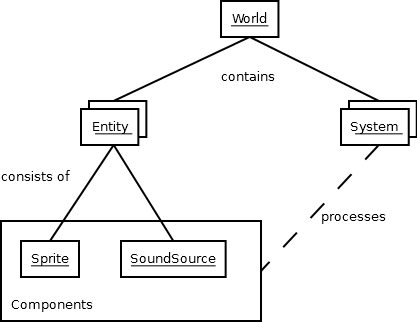
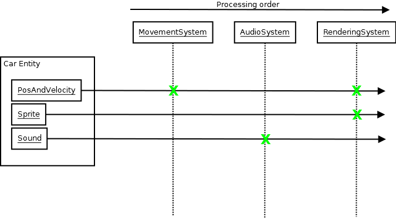

Working with component-based entities¶
sdl2.ext supports a component oriented programming pattern to separate
object instances, carried data and processing logic within applications
or games. It uses an entity based approach, in which object instances are
unique identifiers, while their data is managed within components, which
are stored separately. For each individual component type a processing
system will take care of all necessary updates on running the application.
Component-based patterns¶
Component-based means that - instead of a traditional OOP approach - object information are split up into separate data bags for reusability and that those data bags are separated from any application logic.
Behavioural design¶
Imagine a car class in traditional OOP, which might look like
class Car:
def __init__(self):
self.color = "red"
self.position = 0, 0
self.velocity = 0, 0
self.sprite = get_some_car_image()
...
def drive(self, timedelta):
self.position[0] = self.velocity[0] * timedelta
self.position[1] = self.velocity[1] * timedelta
...
def stop(self):
self.velocity = 0, 0
...
def render(self, screen):
screen.display(self.sprite)
mycar = new Car()
mycar.color = "green"
mycar.velocity = 10, 0
The car features information stored in attributes (color, position,
...) and behaviour (application logic, drive(), stop() ...).
A component-based approach aims to split and reduce the car to a set of information and external systems providing the application logic.
class Car:
def __init__(self):
self.color = "red"
self.position = 0, 0
self.velocity = 0, 0
self.sprite = get_some_car_image()
class CarMovement:
def drive(self, car, timedelta):
car.position[0] = car.velocity[0] * timedelta
car.position[1] = car.velocity[1] * timedelta
...
def stop(self):
car.velocity = 0, 0
class CarRenderer:
def render(self, car, screen):
screen.display(car.sprite)
At this point of time, there is no notable difference between both approaches, except that the latter one adds additional overhead.
The benefit comes in, when you
- use subclassing in your OOP design
- want to change behavioural patterns on a global scale or based on states
- want to refactor code logic in central locations
- want to cascade application behaviours
The initial Car class from above defines, how it should be displayed
on the screen. If you now want to add a feature for rescaling the screen
size after the user activates the magnifier mode, you need to refactor
the Car and all other classes that render things on the screen, have
to consider all subclasses that override the method and so on.
Refactoring the CarRenderer code by adding a check for the magnifier
mode sounds quite simple in contrast to that, not?
The same applies to the movement logic - inverting the movement logic requires you to refactor all your classes instead of a single piece of application code.
Information design¶
Subclassing with traditional OOP for behavioural changes also might
bloat your classes with unnecessary information, causing the memory
footprint for your application to rise without any need. Let’s assume
you have a Truck class that inherits from Car. Let’s further
assume that all trucks in your application look the same. Why should any
of those carry a sprite or color attribute? You would need to
refactor your Car class to get rid of those superfluous information,
adding another level of subclassing. If at a later point of time you
decide to give your trucks different colors, you need to refactor
everything again.
Wouldn’t it be easier to deal with colors, if they are available on the truck and leave them out, if they are not? We initially stated that the component-based approach aims to separate data (information) from code logic. That said, if the truck has a color, we can handle it easily, if it has not, we will do as usual.
Also, checking for the color of an object (regardless, if it is a truck, car, aeroplane or death star) allows us to apply the same or similar behaviour for every object. If the information is available, we will process it, if it is not, we will not do anything.
All in all¶
Once we split up the previously OOP-style classes into pure data containers and some separate processing code for the behaviour, we are talking about components and (processing) systems. A component is a data container, ideally grouping related information on a granular level, so that it is easy to (re)use. When you combine different components to build your in-application objects and instantiate those, we are talking about entities.
- Component
- provides information (data bag)
- Entity
- In-application instance that consists of component items
- System
- Application logic for working with Entity items and their component data
- World
- The environment that contains the different System instances and all Entity items with their component data
Within a strict COP design, the application logic (ideally) only knows about data to process. It does not know anything about entities or complex classes and only operates on the data.
To keep things simple, modular and easy to maintain and change, you usually
create small processing systems, which perform the necessary operations on the
data they shall handle. That said, a MovementSystem for our car entity would
only operate on the position and velocity component of the car entity. It does
not know anything about the the car’s sprite or sounds that the car makes,
since this is nothing it has to deal with.
To display the car on the screen, a RenderingSystem might pick up the
sprite component of the car, maybe along with the position information (so it
knows, where to place the sprite) and render it on the screen.
If you want the car to play sounds, you would add an audio playback system, that can perform the task. Afterwards you can add the necessary audio information via a sound component to the car and it will make noise.
Component-based design with sdl2.ext¶
Note
This section will deal with the specialities of COP patterns and provide the bare minimum of information. If you are just starting with such a design, it is recommended to read through the The Pong Game tutorial.
sdl2.ext provides a World class in which all other objects
will reside. The World will maintain both, Entity and
component items, and allows you to set up the processing logic via
the System and Applicator classes.
>>> appworld = World()
Components can be created from any class that inherits from the
object type and represent the data bag of information for the
entity and application world. Ideally, they should avoid any
application logic (except from getter and setter properties).
class Position2D(object):
def __init__(self, x=0, y=0):
self.x = x
self.y = y
Entity objects define the in-application objects and only consist of
component-based attributes. They also require a World at
object instantiation time.
class CarEntity(Entity):
def __init__(self, world, x=0, y=0):
self.position2d = Position2D(x, y)
Note
The world argument in __init__() is necessary. It will be
passed to the internal __new__() constructor of the
Entity and stores a reference to the World and also
allows the Entity to store its information in the
World.
The Entity also requries its attributes to be named exactly as
their component class name, but in lowercase letters. If you name a
component MyAbsolutelyAwesomeDataContainer, an Entity will
force you to write the following:
class SomeEntity(Entity):
def __init__(self, world):
self.myabsolutelyawesomedatacontainer = MyAbsolutelyAwesomeDataContainer()
Note
This is not entirely true. A reference of the object will be stored on a
per-class-in-mro basis. This means that if MyAbsolutelyAwesomeDataContainer
inherits from ShortName, you can also do:
class SomeEntity(Entity):
def __init__(self, world):
self.shortname = MyAbsolutelyAwesomeDataContainer()
Components should be as atomic as possible and avoid complex
inheritance. Since each value of an Entity is stored per class
in its mro list, components inheriting from the same class(es) will
overwrite each other on conflicting classes:
class Vector(Position2D):
def __init__(self, x=0, y=0, z=0):
super(Vector, self).__init__(x, y)
class SomeEntity(Entity):
def __init__(self, world):
# This will associate self.position2d with the new Position2D
# value, while the previous Vector association is overwritten
self.position2d = Position2D(4, 4)
# self.vector will also associate a self.position2d attribute
# with the Entity, since Vector inherits from Position2D. The
# original association will vanish, and each call to
# entity.position2d will effectively manipulate the vector!
self.vector = Vector(1,2,3)
API¶
-
class
sdl2.ext.Entity(world : World)¶ An entity is a specific object living in the application world. It does not carry any data or application logic, but merely acts as identifier label for data that is maintained in the application world itself.
As such, it is a composition of components, which would not exist without the entity identifier. The entity itself is non-existent to the application world as long as it does not carry any data that can be processed by a system within the application world.
-
id¶ The id of the Entity. Every Entity has a unique id, that is represented by a
uuid.UUIDinstance.
-
delete() → None¶ Deletes the
Entityfrom itsWorld. This basically callsWorld.delete()with theEntity.
-
-
class
sdl2.ext.Applicator¶ A processing system for combined data sets. The
Applicatoris an enhancedSystemthat receives combined data sets based on its setSystem.componenttypes-
is_applicator¶ A boolean flag indicating that this class operates on combined data sets.
-
componenttypes¶ A tuple of class identifiers that shall be processed by the
Applicator.
-
process(world : World, componentsets : iterable)¶ Processes tuples of component items. componentsets will contain object tuples, that match the
componenttypesof theApplicator. If, for example, theApplicatoris defined asclass MyApplicator(Applicator): def __init__(self): self.componenttypes = (Foo, Bar)
its process method will receive
(Foo, Bar)tuplesdef process(self, world, componentsets): for foo_item, bar_item in componentsets: ...
Additionally, the
Applicatorwill not process all possible combinations of valid components, but only those, which are associated with the sameEntity. That said, anEntitymust contain aFooas well as aBarcomponent in order to have them both processed by theApplicator(while aSystemwith the samecomponenttypeswould pick either of them, depending on their availability).
-
-
class
sdl2.ext.System¶ A processing system within an application world consumes the components of all entities, for which it was set up. At time of processing, the system does not know about any other component type that might be bound to any entity.
Also, the processing system does not know about any specific entity, but only is aware of the data carried by all entities.
-
process(world : World, components : iterable)¶ Processes component items.
This method has to be implemented by inheriting classes.
-
-
class
sdl2.ext.World¶ An application world defines the combination of application data and processing logic and how the data will be processed. As such, it is a container object in which the application is defined.
The application world maintains a set of entities and their related components as well as a set of systems that process the data of the entities. Each processing system within the application world only operates on a certain set of components, but not all components of an entity at once.
The order in which data is processed depends on the order of the added systems.
-
systems¶ The processing system objects bound to the world.
-
add_system(system : object)¶ Adds a processing system to the world. The system will be added as last item in the processing order.
The passed system does not have to inherit from
System, but must feature acomponenttypesattribute and aprocess()method, which match the signatures of theSystemclassclass MySystem(object): def __init__(self): # componenttypes can be any iterable as long as it # contains the classes the system should take care of self.componenttypes = [AClass, AnotherClass, ...] def process(self, world, components): ...
If the system shall operate on combined component sets as specified by the
Applicator, the class instance must contain ais_applicatorproperty, that evaluates toTrueclass MyApplicator(object): def __init__(self): self.is_applicator = True self.componenttypes = [...] def process(self, world, components): pass
The behaviour can be changed at run-time. The
is_applicatorattribute is evaluated for every call toWorld.process().
-
delete_entities(entities : iterable)¶ Removes a set of
Entityinstances from the World, including all their component data.
-
insert_system(index : int, system : System)¶ Adds a processing
Systemto the world. The system will be added at the specified position in the processing order.
-
get_entities(component : object) → [Entity, ...]¶ Gets the entities using the passed component.
Note
This will not perform an identity check on the component but rely on its
__eq__implementation instead.
-